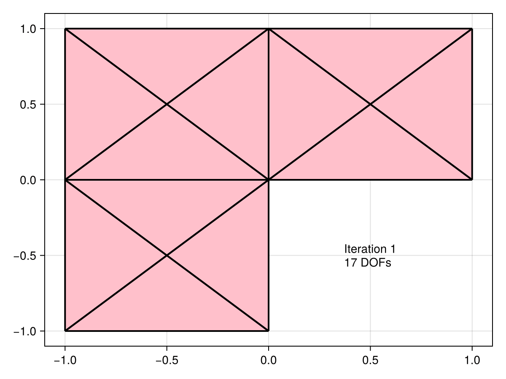

Mesh refinement

In this tutorial, we use the estimator obtained by the equilibrated flux to drive an adative mesh refinement (AMR) procedure. We consider the Laplace problem
\[\begin{align} -\Delta u &= 0 &&\text{ in }\Omega\\ u &= g &&\text{ on }\partial\Omega \end{align}\]
on an L-shaped domain $\Omega = (-1,1)^2 \setminus [(0,1)\times(-1,0)]$. We load this domain from a json file.
using Gridap, GridapMakie, CairoMakie
model = DiscreteModelFromFile("Lshaped.json")
Ω = Triangulation(model)
fig = plot(Ω)
wireframe!(Ω, color=:black, linewidth=2);
figIn this case, we know the true solution $u$ is given by the following formula in polar coordinates:
"Have to convert from -[π, π] to [0, 2π]"
function θ(x)
θt = atan(x[2], x[1])
(θt >= 0) * θt + (θt < 0) * (θt + 2 * π)
end
r(x) = sqrt(x[1]^2 + x[2]^2)
α = 2 / 3
u(x) = r(x)^α * sin(θ(x) * α)
u_fig, _ , plt = plot(Ω, u, colormap=:viridis)
Colorbar(u_fig[1,2], plt)
u_figusing Gridap.Geometry
using Gridap.Adaptivity
using EquilibratedFluxWe define some helper functions for computing the L² norm in Gridap
L2_inner_product(f, g, dx) = ∫(f ⋅ g) * dx
L2_norm_squared(f, dx) = L2_inner_product(f, f, dx)
function L2_norm_squared(f, model, order)
degree = 2 * order + 2
Ω = Triangulation(model)
dx = Measure(Ω, degree)
L2_norm_squared(f, dx)
endL2_norm_squared (generic function with 2 methods)Next, we define the Dörfler marking[1]
function dorfler_marking(η_arr)
if η_arr isa Gridap.Arrays.LazyArray
η_arr = EquilibratedFlux.smart_collect(η_arr)
end
θ = 0.3 # Marking parameter
η_tot = sum(η_arr)
sorted_inds = sortperm(η_arr, rev = true)
sorted = η_arr[sorted_inds]
η_partial = 0.0
i = 1
while η_partial <= θ * η_tot
η_partial += sorted[i]
i += 1
end
sorted_inds[1:i]
enddorfler_marking (generic function with 1 method)As a small example, we show the result of calling dorfler_marking
This step just corresponds almost exact to the contents of the first Gridap.jl tutorial.
function solve_laplace(model, order, g)
Ω = Triangulation(model)
degree = 2 * order + 2
dx = Measure(Ω, degree)
a(u, v) = ∫(∇(v) ⊙ ∇(u)) * dx
b(v) = ∫(v * 0.0) * dx
reffe = ReferenceFE(lagrangian, Float64, order)
V0 = TestFESpace(model, reffe; conformity = :H1, dirichlet_tags = "boundary")
U = TrialFESpace(V0, g)
op = AffineFEOperator(a, b, U, V0)
uh = solve(op)
dofs = num_free_dofs(V0)
uh, dx, dofs
endsolve_laplace (generic function with 1 method)This function uses the EquilibratedFlux.jl package to obtain an error estimation on each cell of the mesh.
function estimate_laplace(uh, dx, model, order)
σ = build_equilibrated_flux(-∇(uh), x -> 0.0, model, order)
#σ = build_averaged_flux(∇(uh), model)
η² = L2_norm_squared(σ + ∇(uh), dx)
Ω = Triangulation(model)
getindex(η², Ω)
endestimate_laplace (generic function with 1 method)Finally, this function puts the previous functions together into the standard Solve -> Estimate -> Mark -> Refine loop of AFEM. The refinement step using newest vertex bisection can be selected using "nvb" with the keyword argument refinement_method. $g$ is the function on the Dirichlet boundary.
function solve_estimate_mark_refine_laplace(model, tol, order; g)
η = Inf
estimators = Float64[]
errors = Float64[]
num_dofs = Float64[]
error_fields = CellField[]
while η > tol
# We extract the internal model from the refined model
if model isa AdaptedDiscreteModel
model = model.model
end
# SOLVE
uh, dx, dofs = solve_laplace(model, order, g)
push!(num_dofs, dofs)
# ESTIMATE
η_arr = estimate_laplace(uh, dx, model, order)
H1err² = L2_norm_squared(∇(u - uh), dx)
Ω = Triangulation(model)
error_field = CellField(sqrt.(getindex(H1err², Ω)), Ω)
push!(error_fields, error_field)
H1err = √sum(H1err²)
η = √(sum(η_arr))
push!(estimators, η)
push!(errors, H1err)
# MARK
cells_to_refine = dorfler_marking(η_arr)
# REFINE
model = refine(model, refinement_method = "nvb", cells_to_refine = cells_to_refine)
end
return error_fields, num_dofs, estimators, errors
endsolve_estimate_mark_refine_laplace (generic function with 1 method)We can change the polynomial order here as well as the tolerance for the estimator.
order = 2
tol = 1e-40.0001We pass the true solution as the Dirichlet function $g$
error_fields, num_dofs, estimators, errors = solve_estimate_mark_refine_laplace(model, tol, order, g = u);We now show that the AFEM refinement achieves the optimal rate of convergence of $\mathrm{DOFs}^{-p/d} = \mathrm{DOFs}^{-p/2}$ in 2D.
fig = Figure()
axis = Axis(fig[1,1], xscale = log10, yscale = log10, title = "Order p=$order", xlabel = "DOFs")
lines!(axis, num_dofs, errors, label = "Error")
lines!(axis, num_dofs, estimators, label = "Estimator")
lines!(axis, num_dofs, num_dofs.^(-order / 2), label = "Optimal rate")
axislegend()
figFinally, the following animation shows the sequence of meshes generated by the adaptive refinement procedure. The refinement is clearly concentrated to the re-entrant corner.
let
idx = Observable(1)
Ωᵢ = lift(idx) do i
error_fields[i].trian
end
nDOFᵢ = lift(idx) do i
"Iteration $i\n$(Int(num_dofs[i])) DOFs"
end
fig, ax, plt = plot(Ωᵢ)
wireframe!(Ωᵢ, color=:black, linewidth=2)
text!(ax, (0.5, -0.5), text=nDOFᵢ, align=(:center, :center), justification=:left)
record(fig, "animation.gif", eachindex(error_fields); framerate=2, compression=0) do i
idx[] = i
end
end"animation.gif"
[1] Dörfler, W. A convergent adaptive algorithm for Poisson’s equation. SIAM Journal on Numerical Analysis 33, 3 (1996), 1106–1124
This page was generated using Literate.jl.